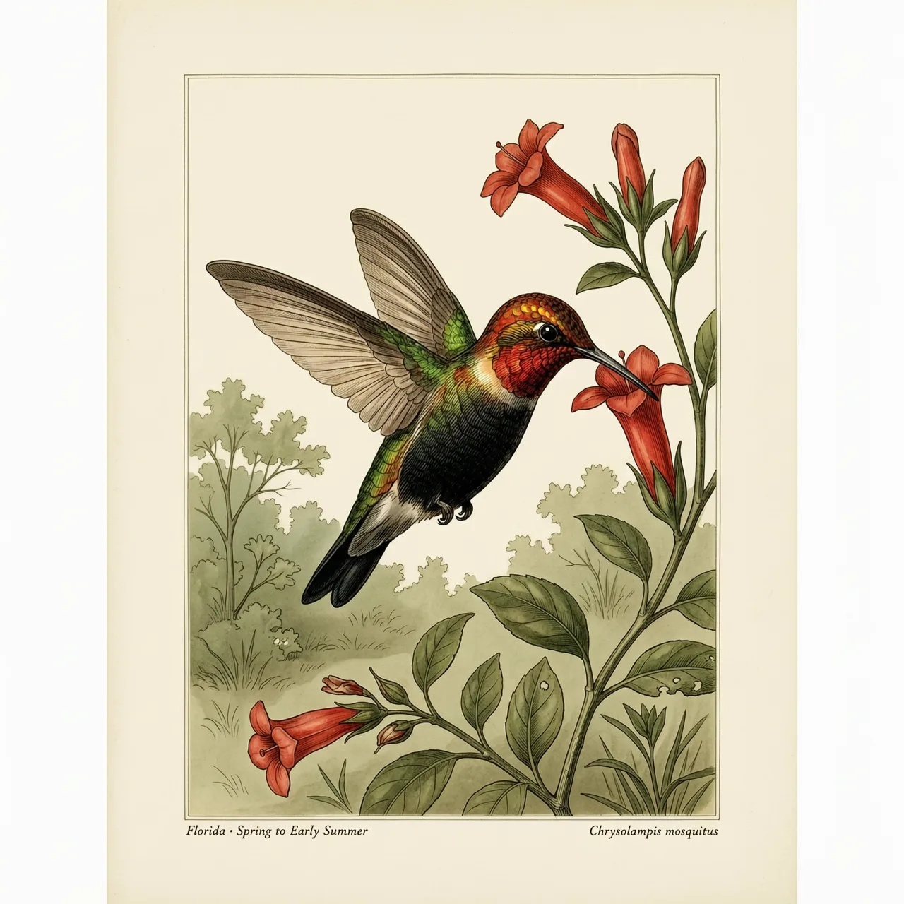
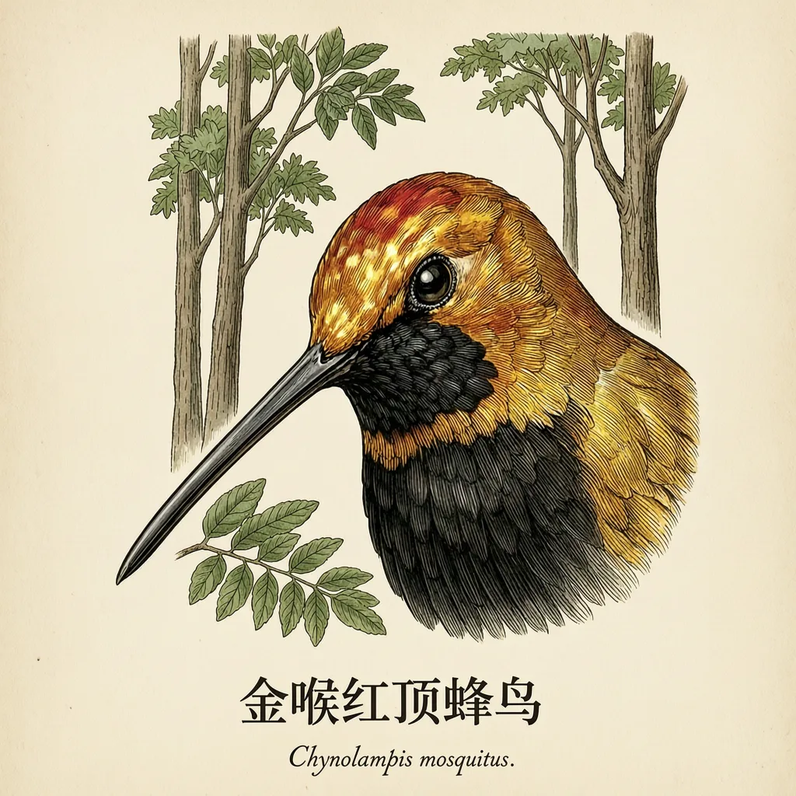

体重约3.9克的一种小型蜂鸟，分布于巴拿马东部至哥伦比亚、委内瑞拉、玻利维亚东部和巴西，栖息于半开放的高大树木森林。嘴峰约20.3毫米，以细长喙取食植物花蜜，也捕食飞虫。红顶蜂鸟属中仅它一种，且没有亚种分化；雄鸟金红头部与漆黑腹部作为标识。
先看个头：体重约3.9克，尾长约32毫米，一只手掌就能把它整个盖住。金喉红顶蜂鸟的足迹从巴拿马东部出发，经哥伦比亚、委内瑞拉，一路向南延伸到玻利维亚东部和巴西。它住的地方是半开放的高大树木组成的森林，树冠之间透得进天光。树长得开，花才长得旺；花在哪里，这种靠花蜜过活的蜂鸟就能出现在哪里。
它的正餐几乎全是植物的花蜜，而工具决定了能喝到哪一口。金喉红顶蜂鸟的嘴峰长约20.3毫米，喙宽却只有约1.8毫米，是一根细而近乎直的针，正好探进筒状的花冠。翼长约53.9毫米，悬停是它取蜜时的常态：停在花前不动，把喙伸进去。需要蛋白质的时候，它也捕食飞虫，这顿饭不只是喝蜜。
有点冷门的是它的门第。红顶蜂鸟属（Chrysolampis）里只有金喉红顶蜂鸟这一种，整属就一个成员，没有旁系亲戚。更特别的是，它的分布从巴拿马拉到巴西，跨过几千公里，却没有分化出任何亚种，是单型物种——许多同等幅员鸟类早已分出好几个地方亚种。雄鸟那身金红的头颈配漆黑的肚皮，走到分布区的哪一头都长同一个样子。
